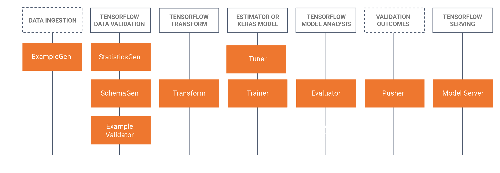
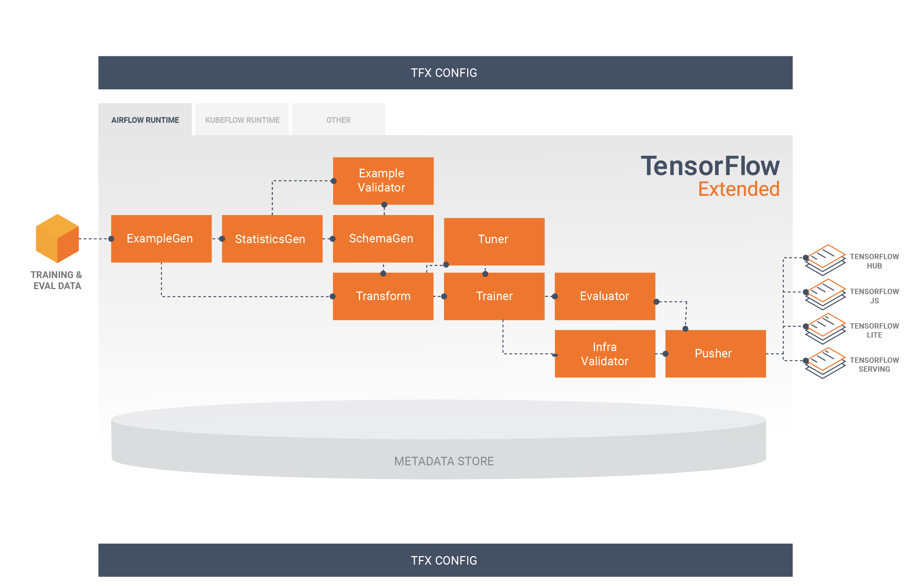

Machine Learning Operations
HOGENT applied
computer science
Thomas Aelbrecht
2022-2023
Think about your tools even before you start coding! A good toolset can save you a lot of time and effort.
Questions to ask before deploying a model:


graph LR
A[Data source] --> B[ExampleGen]
B --> C[Examples]